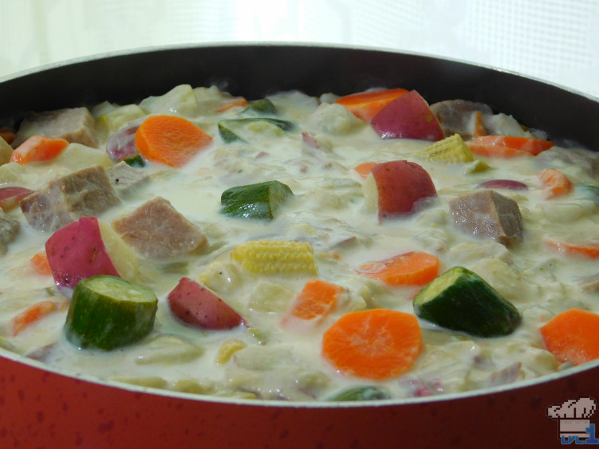

Stupendous Stew

Description
The pride of the Luncheon Kingdom and straight from Mount Volbano itself
Ingredients:
- Beef suitable for roasting, 1 lb
- Salt, 3 cups
- Sugar, 1/2 of a cup
- Onions, 2 medium, chopped
- Butter, 1 tea spoon
- Garlic, 3 cloves, minced
- Carrots, 2 medium, peeled and sliced
- Celery, 3 stalks, sliced
- Red Potatoes, 1 lb, diced
- Turnips, 2 medium, peeled and diced
- Baby carrots, 4 oz, chopped
- Baby Zuccini, 4 oz, chopped
- Salt, 2 tea spoons
- Chicken Stock, 1 quart
- Butter, 1/2 stick
- AP Flour, 4 Tbsp
- Milk, 2,25 cups
- Nutmeg, 1/2 teaspoon
- Heavy Cream, 1 cup
Directions:
- If you plan to salt age your steak, start by lining a roasting pan with aluminum foil and placing your cut of beef in the middle. In a medium mixing bowl, combine the first measure of salt and sugar and then moisten it with enough water so that it begins to feel like wet sand (about 4 tbsp. of water.) Use your hands to pack the salt and sugar mixture so that it completely covers the meat and then place the tray into the refrigerator to age for three days
- Preheat the oven to 350°F. Once it is up to temperature, place the salt aged meat (still covered with salt) in and bake until the internal temperature reads 140°F (My original recipe was made using a 2 lb roast which took 1 hour and 5 minutes in the oven.)
- While the meat is cooking, we have plenty of time to complete the other steps of the stew recipe. Chop the onions and add them to a large stock pot set over medium heat. Add 1 Tbsp of butter and cook the onions until they are translucent. Add the garlic and cook for another minute or two
- Make sure the rest of your vegetables are prepped appropriately and then add them all along with 2 tsp of salt to the stock pot with the onions and garlic. Stir the pot with a spatula or wooden spoon and cook for another two minutes
- Once everything’s been heated through, add the quart of chicken stock to the pot and bring to a simmer. Cook, uncovered, for about 10 minutes or until the veggies give very little resistance when pierced with a fork and then turn off the heat
- While the vegetables are cooking, we can start making the cream base to the stew. Start by heating up 2¼ cups of milk in a separate large stock pot over low heat until it begins to steam. The next thing we’ll want to do is make a roux. In a separate pan, melt a ½ stick of butter over medium low heat. Once melted, add in the 4 Tbsp of AP flour and whisk vigorously until smooth and combined. Let this mixture bubble for about a minute while stirring occasionally
- Once the milk is hot and the roux is made, we can begin to combine them. Do this by pouring in one ladle of hot milk into the roux at a time and use the whisk to stir until smooth and thickened. Repeat this process a couple more times until you’ve added about ⅔ of the milk to the roux. Now pour all of the roux mixture back into the large stock pot with the remainder of the warm milk and whisk to combine. Add the nutmeg and 1 tsp of salt and congratulations, you’ve made a ‘Bechamel’ one of the five infamous Mother Sauces!
- By this point the vegetables should be finished cooking. Carefully strain them through a colander and then incorporate them into the bechamel we just made. Thin the stew out with 1 cup of heavy cream and adjust the seasonings as necessary.
- But wait, what about the steak!? You didn’t think I had forgotten did you? Of course not! Once the meat reaches and internal temperature of 140°F, remove it from the oven and leave it to rest, undisturbed for ten minutes. After the resting period we can cut into the steak and see how we did!
- All we need to do before adding it to the stew is to brush off any excess salt on the outside and then cut it up into bite sized chunks. Stir the streak into the stew and serve it up volcano hot!